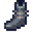

Chaussures
Sauter à la navigation
Sauter à la recherche
Les Chaussures sont un type d'article à porter qui fournissent une augmentation de la Défense et/ou de l'Immunité. Les Chaussures sont aussi trouvables et achetables à la Guilde des aventuriers. De plus, toutes les Chaussures sont vendables à la Guilde des aventuriers.
| Image | Nom | Description | Statistiques | Source | Prix d'achat | Prix de vente |
|---|---|---|---|---|---|---|
| Baskets | Un peu légères... mais à la mode ! |
|
||||
| Bottes en caoutchouc | Protection contre le mauvais temps. |
|
N/A | |||
| Bottes en cuir | Le cuir est très souple. |
|
N/A | |||
| Bottes de chantier | Chaussures renforcées pour une protection supplémentaire. | N/A | ||||
 |
Bottes de combat | Renforcées avec de la maille en acier. |
|
|||
| Bottes de toundra | La doublure duveteuse garde vos chevilles au chaud. | N/A | ||||
| Chaussures de lutin | La boucle sur les chaussures est en or massif. | N/A | ||||
| Bottes thermiques | Conçues pour résister aux conditions météorologiques extrêmes. |
|
N/A | |||
| Bottes de Cowboy | C'est le summum de la mode campagnarde. | Impossible à obtenir | N/A | N/A | ||
| Bottes noires | Faites en cuir noir épais. |
|
||||
| Bottes marche-feu | On dit qu'elles peuvent supporter le magma le plus chaud. |
|
N/A | |||
| Chaussures d'un génie | Faites en tissu, imprégnées d’une énergie curieuse. |
|
N/A | |||
| Bottes de l'espace | Faites avec un tissage d’iridium qui leur donne un éclat violet. | N/A | ||||
| Bottes magiques d’Emily | Bottes fabriquées avec amour par Emily. 100% recyclable ! |
|
N/A | |||
| Chaussures de bouffon | Ces chaussures magiques appartenaient à un célèbre bouffon nain. | |||||
| Bottes de sirène | Les écailles de sirène donnent à ces bottes une aura protectrice. |
|
||||
| Bottes d'écailles de dragon | Ces bottes chatoyantes sont extrêmement résistantes. |
|
N/A | |||
| Chaussures en cristal | Ces chaussures étincelantes garderont vos pieds en sécurité. |
|
Historique
- 1.4 : Chaussures de lutin et Bottes magiques d’Emily ajoutées.
- 1.5 : Ajout des bottes de Bouffon, de Sirène, d'Écailles de Dragon et de Cristal.